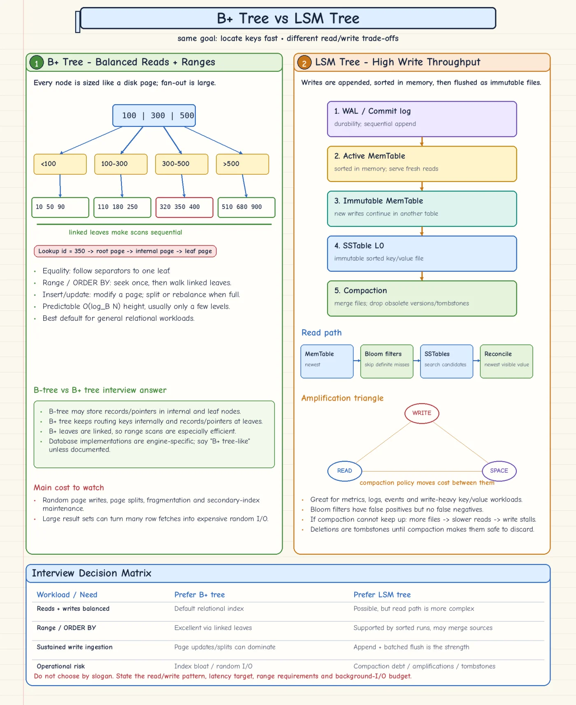

Topic · Database Indexing
B+ Tree vs LSM Tree
Update pages in place for predictable reads, or append and compact for sustained write throughput.


Quick Revision
- B+ tree: balanced, multi-way, page-sized nodes; routing keys inside, records/locators at linked leaves.
- Great for
=, ranges, prefix,ORDER BY, uniqueness; costs random writes and page splits. - LSM: WAL → MemTable → immutable SSTables → compaction. Turns random writes sequential.
- LSM reads check memory, use Bloom filters to skip files, reconcile newest version/tombstone.
- LSM trades write/read/space amplification; compaction debt and tombstones are the main risks.
B+ tree
- Search - root separators → child → leaf → row (or covered columns). For ranges, seek the first leaf and walk linked leaves.
- Insert - traverse to leaf, insert sorted, split if full, push separator up, keep all leaves at one depth.
- Costs - random page writes, splits, fragmentation, secondary-index upkeep, hot right edge for increasing keys.
- B-tree vs B+ tree - classic B-tree may store records in internal nodes; B+ tree keeps them at linked leaves → efficient ranges.
LSM tree
- Write - WAL for durability → sorted MemTable → freeze → flush as immutable SSTable → background compaction.
- Read - active MemTable → immutable MemTables → Bloom filters/metadata → candidate SSTables → newest visible value.
- Bloom filter - "definitely absent" or "possibly present"; never false negatives. Not an index - it can't return rows.
- Deletes - tombstones, kept until no older copy can reappear.
- Monitor - SSTable count, pending compaction, write stalls, disk headroom, tombstone density, Bloom false-positive rate.
| Compaction | Benefit | Cost |
|---|---|---|
| Size-tiered | Very high write throughput | Read and space amplification |
| Leveled | Better point reads, bounded overlap | Higher write amplification |
| Time-window | Time-series expiry | Bad when updates hit old windows |
Which one?
- LSM - metrics, logs, events, time-series, write-heavy key-value, append-heavy data.
- B-tree - balanced reads/writes, strict predictable point/range latency, limited ops budget, relational secondary indexes and ad-hoc queries.
Trade-offs
| Choice | Benefit | Cost / risk |
|---|---|---|
| B+ tree | Equality, range, prefix, ordered scans; predictable height | Random page updates, splits, fragmentation |
| LSM tree | High sustained writes, append-oriented I/O | Compaction, tombstones, read/write/space amplification |
Failure modes
- B-tree degrades under churn - splits, dead entries, poor fill → monitor bloat, vacuum/rebuild on evidence.
- LSM read latency creeps up - too many SSTables / compaction debt → tune compaction, add I/O, alert on stalls.
- LSM disk fills - compaction needs old + new files; tombstones pile up → keep headroom, right TTL policy.
- Deleted data reappears - tombstones dropped too early → respect repair/retention rules.
- Bloom filter extra reads - high false-positive rate → tune bits per key.
Interview practice
Answer aloud, then reveal.
CRED SDE-2 (Dec 2025): explain LSM trees and SSTables (BigTable).
Write to WAL + sorted MemTable; when full, freeze and flush as immutable sorted SSTable. Reads check memory, use Bloom filters to skip files, reconcile newest version or tombstone. Compaction merges files and drops obsolete versions. High write throughput; costs amplification, compaction debt, tombstones.
B-tree or LSM for a metrics platform?
LSM for sustained high-volume writes and time-ordered scans, accepting compaction I/O and amplification. B-tree if stable low read latency dominates and writes are moderate.
Does a Bloom filter replace an index?
No. It only says "definitely absent" or "possibly present"; LSM engines use it to skip SSTables.